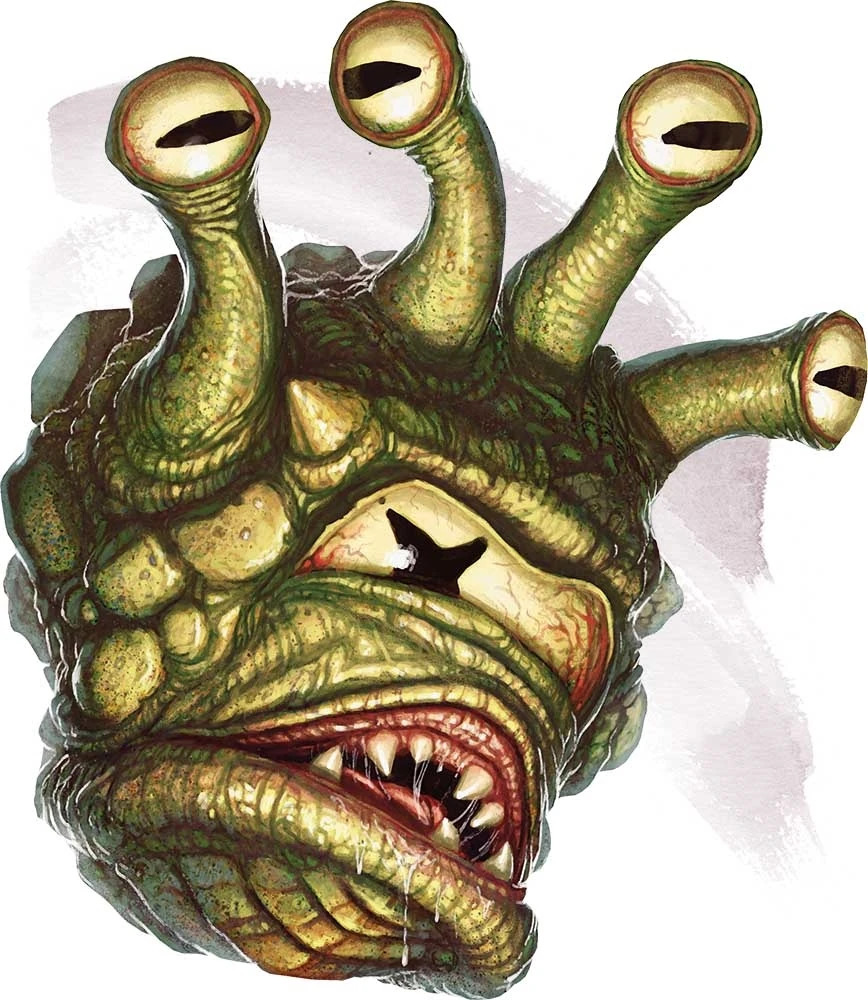
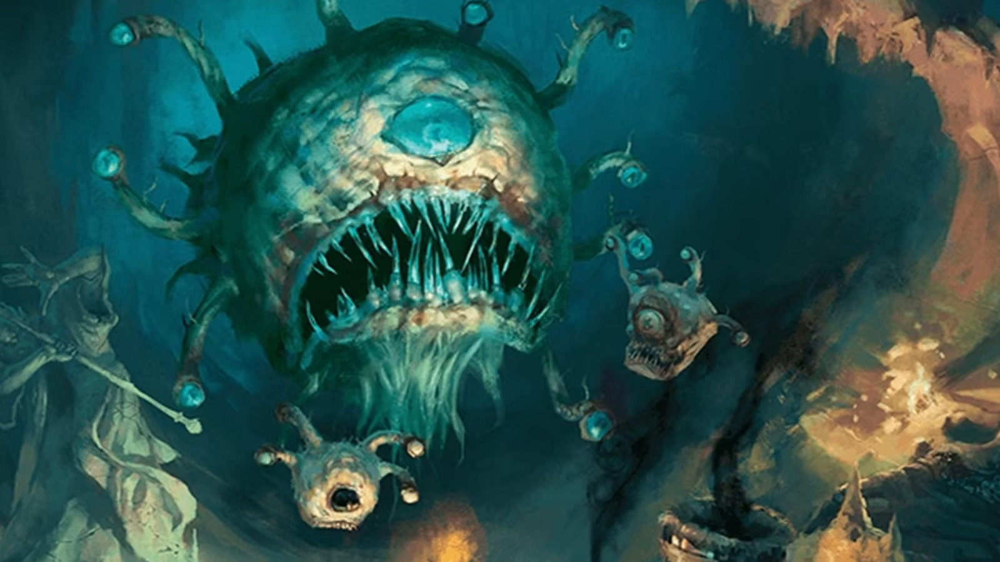

Gazers are a type of beholderkin, a smaller and less powerful relative of the beholder. They are typically created by beholders who dream them into existence, often serving their beholder creator as minions. Despite their small size, gazers can be quite dangerous, as they have a variety of magical abilities that they can use to defend themselves or attack prey. Interestingly, spellcasters who manage to tame gazers can enlist them as familiars.
